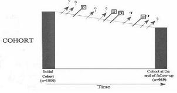

Lost to Follow-up
Lead Author(s): Jeff Martin, MD
Main Threat to Validity in a Cohort Study
"What is the effect of subjects who are lost to follow-up on the inferences generated by a cohort study?"
This is the key element in conducting a good cohort study or clinical trial.
- Losses to follow-up are usually carefully reported in clinical trials, at least in more recent years in the better journals, but it is surprising how many articles from observational cohort studies give little or no attention to this crucial element.
There are, of course, other threats to validity but they are related to elements such as measurement and confounding.
Subjects Lost During Follow-up
If losses are random, only power is affected.
- The point that random losses only affect the power of a study should be obvious since if you just randomly removed subjects from your baseline before you began the study, you would simply have a smaller study
- ( fewer subjects = less power).
If disease incidence is research question, losses related to outcome bias results.
- This point may not be so obvious. If the losses are related only to the outcome, the estimate of disease incidence is biased because you will observe either fewer or more diagnoses than if you had retained everyone in the cohort (bias can go in either direction).
- But the association between a predictor and the outcome is not biased because the losses are balanced (proportional to the baseline proportions) in both those with and without the predictor, and therefore the ratio of the incidence in the two groups remains the same.
If association of risk factor to disease is focus, losses bias results only if related to both outcome and the risk factor.
- But if the losses are related to the predictor as well as the outcome, that ratio of the incidence in the two groups will not remain the same and you will have bias in your measure of association.
Crucial Issues in Who Is Lost to Follow-up
In the diagram below we ask what are the crucial issues in who is leaving cohort:
- What bias do the losses to follow-up introduce?
- Are disease diagnoses being missed?
- Are those with a risk factor more likely to leave and then be diagnosed?

Determining Answers to Crucial Issues
In practice, it may often not be possible to answer these questions in a cohort study for the simple reason that subjects who are lost or refuse to participate further may not be available to supply the answers.
At a minimum you need to attempt to answer them with whatever information you do have about the characteristics of those leaving the cohort by comparing those characteristics with those you retain.
Another strategy to guard the validity of your result is to do a sensitivity analysis in which you assume a worst case scenario for those you have lost and see how much it could affect your findings.
Preventing Losses to Follow-up
Prevent losses to follow-up:
Select those most willing to participate (internal validity before generalizability).
Obtain comprehensive contact information. At a bare minimum, obtain:
- Social security number (critical for death index),
- DOB
- Middle initial,
- father’s surname
- Addresses of friends and family members
Be sure to engage participants while in follow-up.
Managing Losses to Follow-up
Manage losses to follow-up by:
- When losses occur, contact:
- Postal service and/or DMV for change of address
- Check National Death Index
It is important to search for a sample of those lost to compare them with those still on-study and see if there are any systematic problems.